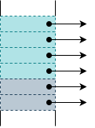
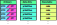
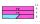

In conventional computer architectures, the system hardware has no information about the location and size of runtime level objects like structs or arrays.
While executing machine instructions, they also cannot distinguish between handling a pointer to such objects or a primitive that by chance has the same value as the pointer.
This lack of information makes it impossible for the hardware to do bounds checks or automatically remove unused data from system memory.
Programming languages like C demonstrate how this can lead to problems like buffer overflows or memory leaks.
Object-oriented programming languages like Java or Python depend on their runtime to differentiate pointers from primitives and free up unused memory.
Obviously, this improvement of reliability and security comes with a substantial tradeoff in program efficiency written in these languages.
To tackle these challenges, the experimental Objective-RISC architecture (O-RISC), proposes a new perspective
on the cooperation of hardware and software. The O-RISC architecture is the main inspiration for RISC-ViO with its core idea to lower the concept of objects from a runtime level down to ISA level.
For this to work an O-RISC processor always has access to information strictly identifying pointers and boundaries of objects for every instruction executed.
This enables the enforcement of bounds checks, the protection of data from unwanted modification and garbage collection in hardware.
This leads to a more robust program execution without the performance impact caused by a runtime providing these features.
View of the different architectures on programming language level objects in memory

a) Conventional architectures
b) O-RISC
c) RISC-ViO
Being the nature of groundbreaking concepts, O-RISC is designed to be very cautious about its new responsibilities.
One area where this can be easily observed is O-RISCs postulation of immutable pointers, they always reference the head of an object.
To index across its contents, compilers are required to keep a separate data register next to the original pointer register.
This contradicts the assumptions many compilers make of computer architectures. LLVMs getelementptr instruction 2 is one example
where they can diverge.
This in consequence makes O-RISC unable to compile the influential C programming language, reducing the amount of programs
being source code compatible with this architecture.
As all children try to grow up to be a better version of their parents, RISC-ViO takes over O-RISCs belief in the new way of hardware-software
cooperation, but draws its own set of conclusions:
1. Make software more robust while keeping compatibility
RISC-ViO aims to provide the same unambiguousness and integrity of pointers as well as bounds checks of objects O-RISC provides.
Unlike O-RISC however, RISC-ViO aims to reduce the impact on existing software to a minimum. The only changes necessary should stay
on the side of runtimes and operating systems. User code on programming language level should be able to stay as is while still benefiting from RISC-ViOs advantages.
2. Make life of compilers easier
With the introduction of hardware heap management, RISC-ViO is raising the abstraction layer of memory. Consequently, the effort of lowering higher
programming languages to machine instructions is dramatically reduced. This opens up chances for improvements in how software is compiled.
We aim to strengthen these benefits without limiting the already existing capabilities of compilers.
3. Stay true to the RISC philosophy
The benefits of robustness are worthless when they come at the cost of arbitrary execution times. That is why RISC-ViO's instructions are designed
in such a way that they can be implemented with single-cycle latency. This keeps changes needed to conventional RISC architectures small and program
execution stays predictable.
4. Be an extension, not a replacement
We propose a way the RISC-V Instruction Set Architecture can be extended without limiting other extensions or future innovation.
This way, the idea of object-based architectures can be easily explored on a wide range of processor configurations. Reaching from minimal embedded
applications, over vector-supporting AI accelerators to state of the art multicore, superscalar CPUs. At the same time, other researchers can easily pick up ViO
and make use of its benefits for their own purposes.
In RISC-ViO, objects are leveraged as the way to achieve the design goals outlined in the motivational chapter.
In order to enforce the correct use of these objects and references to these objects, RISC-ViO alters the semantics of some of the instructions which are part of the RISC-V I base instruction set.
This alteration of the RISC-V base ISA is denoted as the RISC-V I' ISA.
Objects are unique, bounded areas allocated in memory.
The defining traits of such objects are their XLEN-wide length as well as the accesses possible on these objects.
For this purpose, a total of three flags, 'read', 'write' and 'data only' exist for each object.
These flags and their incurred permissions may be set or cleared in any combination using special, privileged instructions.
Visualization of a pointer (pink), primitive (blue) and an object
I/O devices behave similarly to objects in that they also have XLEN-wide length traits.
In contrast to objects, those traits are fixed by the hardware and cannot be influenced by software.
I/O devices implicitly have all three of the 'read', 'write' and 'data only' flags set.

Visualization of a pointer (pink), primitive (blue) and an object
The RISC-V I' ISA differentiates between two data types in the register file and in memory: references to objects or I/O devices, called pointers, and regular data, being denoted as primitives.
Pointers have a a total of two separate fields. One of those is a reference field containing either an objects base address or the number of a I/O device.
An objects second field always contains an index which may point to any byte inside of the referenced object or I/O device.
The pointer encoding has to allow pointers to cover the entire address space of the processor of XLEN bits.
A value like a number or a character may be arbitrarily modified just as it is possible in RISC-V.
For a pointer, in contrast, some restrictions apply regarding the way in which it may be modified.
Arithmetic or logic operations on such a pointer like additions or bitwise inversions modify the pointer as a regular address would have been modified by the executed operation.
This modification is achieved by only altering a pointers index field while the combined field stays unchanged.
Note that pointers having an index reaching out of the bounds of an object or I/O device are allowed in both the register file and in memory.
In case of pointers of memory type, comparisons act only on the effective address of a pointer, all other information is not taken into account.
For I/O type pointers, the value used for the actual comparison is made up by shifting the I/O device number up by XLEN bits and adding this value to the index.
Arithmetic or logical operations on two pointers are allowed in the case that both pointers are of memory type.
For arithmetic operations on two memory type pointers, the combined field of the resulting pointer is chosen from the input pointer base addresses such that the calculated index lies within the object located at this base address.
Should the result not fall into either of the input objects, the behavior regarding which input is used for the base address field of the resulting pointer is undefined.
By combining the three independent access permissions of an object, a total of eight distinct combinations are possible.
To simplify the discussion of objects, these possibilities are combined to make up three types.
The first types is denoted as the regular type. Any object having its 'data only' flag cleared is of this type.
Such objects may hold any data meaning both values and pointers may be stored in an object of this type.
In order to enforce the separation of instructions and data however, instructions may not be fetched from such objects and executed afterwards.
The second important object type is objects having their 'data only' flag set and at least one of their 'read' or 'write' flags being enabled.
Such objects are said to be data only objects.
Data only objects, unlike regular objects, may not contain pointers.
Just as with regular objects, it is not allowed to fetch and execute instructions from such objects.
By keeping pointers out of data only objects, it is possible to achieve an improvement of memory access efficiency in some implementations.
Another advantage of objects not containing any pointers is the reduction of the effort caused by garbage collecting these objects.
As hinted at by the section on regular objects, there is also an object type which contains instructions.
This object type is denoted as 'executable' and has its 'data only' flag set while both 'read' and 'write' flags are cleared.
As such, no instruction may explicitly access the contents of an object of this type. Only the processor may implicitly read from executable objects to fetch instructions.
This makes it necessary for system management software to load in code in the form of a data only object and then alter object type by modifying its permission flags.
RISC-ViO requires executable objects to hold a pointer to their Global Offset Table as described in the Global Offset Table chapter.
In user mode, this pointer is not accessible directly but has to be setup by the system management software instead.
For the differentiation between pointers and values to be meaningful, RISC-ViO mandates that only pointers may be used to access memory via the object abstraction. The same is also true for accesses to I/O devices: Accesses to I/O devices is only possible via their corresponding pointer.
(Note that pointers may not be written to I/O devices as their 'data only' flag is set implicitly.)
This requirement influences all load and store instructions as listed below:
◈ lb/lbu
◈ lh/lhu
◈ lw
◈ sb
◈ sh
◈ sw
The main change for those instruction families lies in them requiring pointers to be used to select objects and I/O devices instead of memory locations.
Offsets from those pointers using the 12 bit immediate present in those instructions are still allowed.
Those offsets are added to the index of the pointer used to access the object to make up the offset used for the actual object or I/O device access.
Being explicit memory accesses in the case of memory type pointers, these instructions may only access regular as well as data only objects.
Since instructions are managed using executable objects, the semantics of even more instructions have to be altered:
◈ auipc
◈ jalr
◈ jal
The auipc instruction for example will emit a pointer instead of a value.
Due to the access to executable objects being limited as described in the executable objects chapter however, access to constant data is not possible using this pointer.
The encapsulation of instructions also means that the jalr instructions expects a pointer to a object containing instructions as a jump target to be written to the program counter.
This instruction will also, just as jal does, write a pointer to its destination register.
For the separation of data and instructions, jalr also requires a pointer to an executable object as source register content.
Using a value as a destination for jalr is still allowed though and leads to jumping to the given index inside the currently executed executable object.
To make sure that a return address cannot be used twice, RISC-ViO mandates that the variant of jalr which realizes the ret pseudoinstruction has to null out the register ra except for the zero-bit of its index after updating the program counter.
RISC-V specifies 31 general-purpose registers and one special register, zero.
The RISC-ViO architecture adds additional requirements to this register file definition:
each register has to be able to hold either a value of width XLEN or a pointer with a XLEN wide index.
both ra and sp have to be able to hold colour information. (see frames chapter)
Note: The zero register has to contain the value 0.
In addition to the modifications of already existing instructions which are part of the RISC-V I base ISA, RISC-ViO introduces several instructions as an interface between software and hardware regarding objects.
Those instructions are all part of the zhm ("heap management") extension.
Since RISC-ViO manages objects on the ISA level, the ISA has to provide a means to create new objects and their corresponding pointers.
The creation of ISA level objects on the heap is achieved by the alc-instruction family which comes in four flavours.
In fact the alc instruction family is the only way to obtain new pointers in user mode.
The next section provides a short description of those instructions alongside their bit encodings.
The objects allocated by the alc-instruction family are both readable and writable but not executable on allocation (their 'read' and 'write' bits are set).
Newly allocated objects only contain the primitive value 0.
In order for the system management software to influence where new objects are placed, the zhm extension introduces an additional machine mode CSR.
The CSR malc contains both the lowest possible address on the heap as well as the address of the object last allocated.
Those values are represented using a pointer, where the base address field contains the address of the object last allocated and the index field contains the lowest address still being part of the heap.
The CSR index of the malc CSR can be extracted from the CSR table.
The alc instruction is the most basic form in its family. This instruction allows the allocation of a regular object where the size of the object is by the value passed via rs1.
The size is given in bytes as per the value in rs1.
31
25
24
20
19
15
14
12
11
7
6
0
Instruction
0000000
rs2 (src)
00010
000
rd (dst)
0001011
alc
When the alc instruction is used to allocate a frame by specifying sp as the destination register, its semantic is extended. In this case alc not only allocates a new frame object but also stores the old sp at index zero of the new frame object, making it the only field in the frame object which is not of primitive 0 value
The alc instruction may trigger the following exceptions for the given events (xtval content):
HeapOverflowException: Allocating the specified object would overflow the heap. (object_size as value)
IncompatibleTypeException: rs2 contains a pointer, not a value (rs2)
The alci instruction is a variation of the alc instruction. In contrast to alci, the size of the new object is given by the 12 bit wide immediate.
This immediate specifies the amount of pointers which can fit inside the object. So for a XLEN of 32, it specifies the number of 32 bit words that fit into the object.
31
25
24
20
19
15
14
12
11
7
6
0
Instruction
imm[13:2]
00010
010
rd (dst)
0001011
alci
Please note that the alci instruction behaves the same way alc does when rd is sp.
The alci instruction may trigger the following exceptions for the given events (xtval content):
HeapOverflowException: Allocating the specified object would overflow the heap. (object_size as value)
The alc.d instruction is a specialization of the alc instruction, allowing for the allocation of data only objects.
Note that is it also forbidden to use alc.d to allocate a new frame object.
31
25
24
20
19
15
14
12
11
7
6
0
Instruction
0000000
rs2 (src)
00000
001
rd (dst)
0001011
alc.d
The alc.d instruction may trigger the following exceptions for the given events (xtval content):
HeapOverflowException: Allocating the specified object would overflow the heap. (object_size as value)
IncompatibleTypeException: rs2 contains a pointer, not a value (rs2)
The alci.d instruction is the analogous form of alci regarding data only objects. It differs in the type of allocated object and in that it also is prohibited from allocating frames.
31
25
24
20
19
15
14
12
11
7
6
0
Instruction
imm[13:2]
00000
011
rd (dst)
0001011
alci.d
The alci.d instruction may trigger the following exceptions for the given events (xtval content):
HeapOverflowException: Allocating the specified object would overflow the heap. (object_size as value)
The qsz instruction provides a means of reading an objects size as specified at its allocation time in bytes. For this, the source register has to contain a pointer.
31
25
24
20
19
15
14
12
11
7
6
0
Instruction
0000000
00000
rs1 (src)
100
rd (dst)
0001011
qsz
The qsz instruction may trigger the following exceptions for the given events (xtval content):
IncompatibleTypeException: rs1 contains a pointer, not a value (rs1)
ForbiddenDstException: rd is sp which only takes pointers (-)
With the instructions described above, it is impossible to break out of the restrictions given by the bounds check and pointer integrity safety measures. It is also not possible to influence object behaviour regarding permissions.
To enable the management of the processor system, requiring low level control over these features, additional instructions are available for all privilege modes above the user mode.
In order to be able to create and inspect pointers a total of four instructions are provided. These allow for asserting that a register contains a pointer, reading out the integral parts of a pointer as well as creating arbitrary pointers.
The sep 'set if pointer' instruction allows for checking for the kind of value present in a register. When the register given by rs1 contains a primitive, a primitive of value 0 is written into the register given by rd.
Otherwise, a non 0 primitive value is written to this register.
The dtp 'data to pointer' instruction allows for the assembly of arbitrary pointers. Both the index as well as the base address are set according the values in registers rs1 and rs2 respectively. The result is stored in rd.
Pointers assembled using dtp are of memory object type on creation but may be turned into I/O pointers using the st instruction. Note that in such a case, the I/O device number field is directly set to base address field value.
31
25
24
20
19
15
14
12
11
7
6
0
Instruction
0111111
rs2 (ix)
rs1 (base)
000
rd (dst)
1001001
dtp
The dtp instruction may trigger the following exceptions for the given events (xtval content):
IncompatibleTypeException: rs1 or rs2 contains a pointer, not a value (rs1 or rs2 with rs1 being prioritized)
In order for a system software to gain control over the tags that make up an objects traits, additional instructions are required. Both read and write access to these tags is possible using the instructions introduced below.
The lt instruction enables reading out the tags of an object by placing the tags of the object or I/O device pointed to by the contents of rs1 into the register rd in the form of a primitive.
For information on how these tags are encoded, please refer to the discussion of tags on ISA level.
31
25
24
20
19
15
14
12
11
7
6
0
Instruction
1110111
00000
rs1 (ptr)
000
rd (tags)
1001001
lt
The lt instruction may trigger the following exceptions for the given events (xtval content):
IncompatibleTypeException: rs1 contains a value, not a pointer (rs1)
The st instruction is the companion of the lt instruction, allowing object or I/O device tags to written. For this, st sets the tags of the object or I/O device being referenced by the content of the rs1 register to the tags provided in rs2 in form of a primitive.
31
25
24
20
19
15
14
12
11
7
6
0
Instruction
1111011
rs2 (sd)
rs1 (ptr)
000
00000
0001011
st
The st instruction may trigger the following exceptions for the given events (xtval content):
IncompatibleTypeException: rs1 contains a primitive, not a pointer (rs1)
IncompatibleTypeException: rs2 contains a pointer, not a primitive (rs2)
The st instruction is the companion of the lt instruction, allowing object or I/O device tags to written. For this, st sets the tags of the object or I/O device being referenced by the content of the rs1 register to the tags provided in rs2 in form of a primitive.
In order to be able for garbage collection to be possible in software, it is necessary to be able to clear out certain memory regions.
This is a consequence of mandating that newly allocated objects may only contain the primitive value 0.
A garbage collector implemented in software is able to use the clr instruction to ensure that this requirement is met.
This is achieved by this instruction writing the primitive value 0 of XLEN width to the memory address given by the contents of register rs1.
31
25
24
20
19
15
14
12
11
7
6
0
Instruction
1111101
00000
rs1(ptr)
000
00000
0001011
clr
The clr instruction may trigger the following exceptions for the given events (xtval content):
IncompatibleTypeException: rs1 contains a pointer, not a primitive (rs1)
In order to protect the local data as well as control flow data of a function, RISC-ViO alters the concept of what is called a stack in conventional architectures.
To protect the stand-ins for this stack, the so-called frame objects or frames, from malicious or accidental modification by foreign functions, RISC-ViO introduces additional protection mechanisms for these frame objects.
Apart from objects for regular data storage the I' ISA also manages the stack as a series of objects. This partition of the stack in a single frame per function allows for further security mechanisms but also requires cooperation by the program.
Most notably, the stack is not grown by arithmetically modifying the stack pointer. Instead, the program has to manually allocate a new frame object. Once this frame object has been allocated, accesses to inside this object behave just the way the stack frame in RISC-V behaves.
Due to the stack pointer register now containing a pointer, I' is able to protect older frame objects from accesses by arithmetical modification of sp.
The implications for the passing of function arguments between functions are outlined in the calling convention chapter.
Frame objects are based on regular objects but differ in the accesses which are allowed on them.
Frame objects are never data only which means the 'data only' flag is cleared.
To protect both the stack pointer sp as well as the return index ra, in frame objects special slots are reserved. For the 'stack' pointer sp, the pointer to the previous frame object, the first slot of XLEN size at byte index zero is reserved.
This is immediately followed by the ra slot which is also XLEN wide. For XLEN=32, this slot resides at byte address 4.
In user mode, these slots of a frame object are only allowed to be used to store or load their respective register. Any other operation on these slots will lead to a ForbiddenDstException or ForbiddenSrcException.
Note that it is not only prohibited to store any other register than sp and ra in those slots, but also to store these registers anywhere else when in not in a privileged mode. The same restriction also applies when loading these registers.
These restrictions are enforced using ForbiddenDstException and ForbiddenSrcException.
A Frame Object for XLEN=32

All other slots are general purpose and access to them is not restricted in any way.
As described in the introduction to this chapter, RISC-ViO denies foreign access to frame objects. As a consequence, the calling convention has be modified slightly from the convention used by RISC-V.
Namely, it is not possible to spill function arguments from registers onto the stack of the receiving function. Instead, the following scheme is employed:
Just as is the case for conventional RISC-V, the arguments are stored in the registers a0 to a7 given that there are no more than eight XLEN arguments or as many arguments as will fit in those registers.
Instead of pushing the additional arguments that will not fit in the argument registers on the stack, a spill object of corresponding size has to be allocated. A pointer to this spill object is placed in a7 and the remaining arguments are stored in this object.
To achieve protection of frames from foreign accesses RISC-ViO uses so-called colour tags for both the sp and the ra register.
By updating those colours at critical points such as function entries/exits and frame allocations, the processor always knows whether the frame pointed to by the
sp register is owned by the currently executed function.
This state is called "regular", while the current function not being the owner of the current frame is denoted as the "irregular" state.
For sp as well as for ra, there are two colours: black and white. Those colours are an integral part of those registers and cannot be read or modified separately from their registers.
Also, when storing/loading ra and sp using sw/lw, their colour is also stored/retrieved to/from their slots.
An overview of the transition between those colours is given in Figure 1.
On every function entry, signified by a jalr ra, zero, x (call) instruction, the processor flips the colour of ra from white to black or vice versa. The same also happens when a function is exited using jalr zero, ra, 0 (ret). For sp, this takes place on every frame allocation using the alc/alci instructions.
Whether the processor is currently in the regular state (light blue), is given by the equality of the colours of ra and sp.
If the colours of sp and ra both were black for example, the processor would be in the regular state, allowing access to the current frame.
Colour transitions
Figure 2 provides two sample program flows for which the colour and therefore state transitions are shown.
Figure 2a) shows the behaviour of the colour mechanism during the execution of a correct stream of instructions while figure 2b) highlights how this mechanism catches bad program behaviour.
In 2b) the colour mechanism spots function b trying to access function a's frame, which leads to the processor raising a StateException.
State transitions two instruction streams
a) Transitions during normal program flow
b) Transitions during abnormal program flow with exception
Der Einsatz von Code-Objekten verbietet Sprünge auf fest definierte Adressen. Auch Speichern und Laden von Daten an festen Adressen ist mit dem Objektansatz unvereinbar.
In herkömlichen Architekturen kommen zum Auflösen von (zur Compilezeit) unbekannten Adressen "Global Offset Tables" (GOT) zum Einsatz. Möchte ein Programm auf bestimmte Runtime-Funktionen
wie z.B. printf() zugreifen, kompilieren gcc und clang keinen Sprung zu einer absoluten Adresse in den Programmablauf, sondern einen Sprung in die für dieses Programm individulle GOT.
Die GOT wird dann wenn das Programm geladen wird vom Betriebssystem gefüllt, sodass diese den Sprung an die richtige Stelle in der Runtime weiterleitet. Der "Umweg" über die GOT
dient vor allem Sicherheitstechnischen Aspekten. So kann ein Betriebssystem den Zugriff auf bestimmte Runtime Funktionen verwehren, indem es sich beim Laden des Programmes entscheidet,
die Adresse der Funktion nicht in die GOT einzutragen. Außerdem kann das Betriebssystem die echten Adressen der Runtime-Funktionen vor dem Nutzerprogramm verstecken, indem es in die
GOT nicht die Endadresse sondern auf eine weitere, für das Nutzerprogramm nicht lesbare aber ausführbare, Sprungtabelle verweist.
Neben den Sicherheitsaspekten bieten GOTs auch noch die Möglichkeit des "Lazy Linkings". Die GOT Einträge werden beim Laden des Programmes nicht auf die tatsächlichen Zieladressen,
sondern auf die Adresse des Dynamischen Linkers gesetzt. Soll nun das erste Mal ein Bibliotheksaufruf ausgeführt werden, wird in wirklichkeit zuerst der Linker angesprungen, der
die Adresse des Sprungziels ermittelt. Diese ersetzt dann den Eintrag in der GOT die den Linker aufgerufen hat, so dass folgende Sprünge nicht noch einmal den Linker ansprechen müssen.
In der herkömlichen RISC-V ABI wird die Adresse der GOT über die Distanz zum jal[r] Befehl angegeben. Dieser Ansatz ist in ViO nicht nutzbar, da ein Objekt nicht gleichzeitig
lesbar und ausführbar sein kann. Zu diesem Zweck wird eine Art "companion"-Objekt eingeführt, dass alle Adressen, auf die ein Executable zu seiner Ausführung zugreifen möchte, führt.
Anders als bei herkömlichen GOTs werden in diesen Objekten keine Offsets, sondern reine Zeiger gespeichert. Auch ausführbarer Code für Bibliotheksaufrufe befindet sich nicht in einer solchen GOT.
{gramm: Auf} Die "companion"-GOT kann in RISC-ViO immer über das Register x3 (gp) zugegriffen werden. Es ist Aufgabe der Hardware oder des Betriebssystems dafür zu sorgen, dass das gp-Register immer
auf das dem Executable zugehörigen GOT-Objekt verweist.
Um nun einen Bibliotheksaufruf auszuführen wird zuerst die Adresse der Bibliotheksfunktion aus der GOT mittels eines normalen Ladebefehls geladen und dann mit einem jalr and diese Adresse gesprungen.
Um dem Linker mitzuteilen, dass für dieses Sprungziel ein GOT-Eintrag angelegt werden soll, wurde ein neuer Assembler Modifier eingeführt: %got_off(symbol). Dieser Modifier wird vom Linker ersetzt durch den Offset
in der GOT der Executable an dem das symbol zu finden ist. Zu diesem Zweck wurde auch ein neuer Relocation/Dynsym-Typ eingeführt, um in ELF-Files zu markieren dass an einer bestimmten Stelle der load-offset noch
ersetzt werden muss, mit dem endgültigen Offset der Adresse in der GOT, ähnlich wie es auch bei den Assembler Modifiern %hi, %lo, usw. gehandhabt wird.
Ein call symbol wird also nun ersetzt durch eine lw t1, %got_off(symbol)(gp) jalr ra, 0(t1) Abfolge.
Nach dem selben Prinzip werden auch Zugriffe auf statische Objekte gehandhabt. Über den %got_off modifier wird der Linker angewiesen, den Zeiger auf das Objekt in der GOT vorzuhalten und den Zugriff
auf das Objekt zur Load-Time aufzulösen. Die statischen Objekte werden auch schon in herkömmlichen ELF-Files markiert, sodass der Lader in ViO mit einem normalen ALC Befehl das statische Objekt anlegen,
evtl. befüllen und den Zeiger auf dieses Objekt in der GOT hinterlegen kann.
To enforce the pointer based memory access scheme, the processor will raise a IncompatibleTypeException when a program tries to use an address value to access memory.
Since the object length is known on ISA level, the processor is able to raise a IndexOutBoundsException when an out of bound load or store instruction is executed.
In case of such an exception, xtval will contain the base pointer as well as the index which was beyond the object bounds.
The processor is also able to detect whether the destination object is compatible with the current access type by checking the permission tags of the object.
In consequence, LoadAccessFault, StoreAccessFault or IncompatibleTypeException are raised when the corresponding flag is not set as per ordinary objects.
LoadAccessFaults are triggered when the 'read' flag is cleared while StoreAccessFault is raised in case of a store access to a object with cleared 'write' flag.
Trying to store pointers to a data only object marked by a set 'data only' flag will lead to a IncompatibleTypeException.
The same exception is triggered when trying to jump to a regular object using jalr or when trying to do an arithmetic or logical operation on two pointers which are not both of memory type.
Trying to access the register gp for anything other than as a access pointer in a memory instruction will lead to a GPAccessException.
To inform the software that a access to a regular or executable object would violate its bounds, a JumpIndexOutBoundsException is raised in case of an executable object or a IndexOutBoundsException in case of a regular object.
Should the heap onto which new objects are allocated on reach the end of its capacity, a HeapOverflowException is raised.
In the context of frame objects, a total of three exceptions are added to the exception list.
A StateException catches access to foreign frame objects as described in frame ownership.
Even when a frame object is owned by the currently executed function, there are still two more exceptions possible: ForbiddenDstException is raised when trying anthing else than ra or gp into their slots.
ForbiddenSrcException checks for using these slots as specified in case of load accesses.
The IncompatibleTypeException is raised when a pointer is written to a I/O device using its corresponding pointer.
Since RISC-ViO allows both pointers and values to be stored in the registers and also organizes code using objects, some CSR also need to be able to hold pointers.
This is the case for xtvec and xepc due to executable objects and for xtval and xscratch due to pointers in general.
To access the components of these registers, the csrw instruction may be used in conjunction with the dtp/btd/itd instructions.
Apart from this slight modification as well as the expansion of available exceptions, exceptions and interrupts behave identical to the way they do in RISC-V.
The exception table provides an overview of the exceptions corresponding to the protection schemes introduced by RISC-ViO.
In order to allow higher privilege modes to gain the access required for system management, some exceptions are suppressed in certain privilege modes.
Every RISC-ViO architecture requires a register file which is able to satisfy the requirements given in the I' chapter.
Apart from these requirements, RISC-ViO does not specify how a register file of an implementation of this architecture has to look like.
This leaves room for tailoring the implemented register file to the design constraints at hand.
(Please note that in this specification, pointers are written in the form x.y where x is a pointers value (base address + tag) and y is the index of the pointer. To graphically set apart pointers from values, pointers are drawn in various shades of pink and purple.
Values are not denoted in any special way in text form but drawn in light blue.)
The subarchitecture implementation offered here is meant only as an example implementation and is focused on higher performance while requiring more hardware resources. The register sections required by the RISC-ViO specification are denoted with 'ISA' while sections introduced by this particular implementation are denoted with 'IMP'. In this implementation, the 'IMP' sections are exclusively made up of object header metadata drawn in green.
An example implementation of a RISC-ViO register file
In the provided implementation, the hardware will update gp on every jump to another executanle object. In case of exceptions,interrupts and code object changes due to sret/mret, it is the duty of the system management software to update gp accordingly.
As described in the frames chapter and as present in the requirements list in I', RISC-ViO calls for the ability to hold colour information for both the ra as well as the sp register.
The implementation presented here is able to satisfy this requirement using the fields as shown in the last section only. In this implementation, the colour 'black' is encoded as a cleared bit ('0') while 'white' corresponds to a bit which is set ('1').
Since the smallest possible instruction size specified by RISC-V is 16 bits or two bytes, the lowest bit of the index of ra always has to be 0.
This is why it is possible to encode the current colour of ra in this bit. For sp, the same is not true however since its index may be set to any value.
The colour of sp is instead stored in the current frames header copy in the register file. More specifically, the colour-bit in this header is used for storing sp's colour.
In order to distinguish pointers from values, the provided implementation uses a tag bit for all registers which may hold both values or pointers. Values are tagged as '0' while pointers are identified by a '1' bit.
Since on ISA level, RISC-ViO only distinguishes between regular an I/O pointers, only a single bit in the register file is required to keep those pointer types apart.
This bit is interpreted as part of the pointer and is added to the right of the pointer base address or I/O device number for I/O pointers.
Headers mark the beginning of every Object. They hold all information about the object necessary to ensure proper handling of itself. Headers are always 16-Byte aligned.
Elements of Objects are tagged by the lowest Bit(s) in a Chunk of Memory.
On a 32-Bit Architecture this Chunk is 32 bits wide, on 64-Bit Architectures 64 bits.
Word, Half and Byte locations in an ordinary object
Data in Ordinary Objects is identified by the trailing 0-Bit. If a Store is attempted, which would make the two uppermost bits of a chunk unequal (e.g. bit-31 ≠ bit-30 on a 32-Bit Architecture)
then the Data is stored to the current sanctuary Object instead and the corresponding displacement pointer will be stored to the address the original store was attempted to.
Pointer to displaced data
These Pointers are identified by trailing 01-Bits.
Pointers to Objects are identified by trailing 0111-Bits. They can be generated by allocation instructions and point to the head of ordinary, data-only and executable objects.
Pointer to an Object
If a store is attempted on a pointer that was modified by arithmetic instructions so that its index is unequal to zero, the pointer will be displaced into the current sanctuary object and only the displacement pointer
is stored to the original address the store was attemped to.
Pointer to a displaced Pointer
These Pointers are identified by trailing 011-Bits.
Pointers to I/O-Capabilities are identified by the trailing 01111-Bits. They hold a device-id which identify what I/O-Device is referenced.
Data-Only Objects are identified by the data-only Bit in the Header. Data inside of these Objects is not tagged, so they make use of the whole 64|32 Bit per Element.
Pointers are forbidden inside data-only Objects.
Executables have only the data-only bit set in their header. This identifies them as a executable.
As part of their Header, Executables have the pointer to their companion GOT stored at the third (double-)word of the object. The start of Code is then referred as index 0 of the objuect.
It is stored in the same fashion as in data-only so they can harvest the full 64|32 bit of a Element.
Sanctuaries only have the Sanctuary Bit set in their header. They are used as memory space for displaced primitives and displaced pointers and cannot be referenced by ordinary pointers.
Displaced Pointers take two Element Slots, one for the base pointer and one for the index, thus are always aligned to 2-Element boundaries.
The base pointer is stored as a ordinary pointer and the index as data-only primitive.
Displaced Primitives only take one Element Slot beeing the (Double-)Word that was displaced. These Types can be stored at any Element position inside the Sanctuary.
The provided implementation example of the RISC-ViO architecture by using the object structures outlined above implies new requirements for a processor pipeline supporting this implementation.
In the next sections, a possible subarchitecture meeting those requirements shall be described.
In the presented implementation, all members of the alc instruction family place both regular data objects as well as frames objects on the heap.
There the objects lie in allocation order until a garbage collection cycle occurs. The CSR malc is used to keep track of the heap fill level and heap limit. malc.ix keeps track of to the newest objects start address while malc.ptr contains the lower limit of the heap in form of an address.
In the process of such a cycle, objects may be moved or overwritten in case of not being required anymore.
The allocation process starts by calculating the address of the address of the new object header.
This is given by rounding down the value given by the expression
down to next number divisible by 16. If this value is larger than malc.ptr the new object fits inside the heap and malc.ix is updated to this value.
In this case, a pointer tag is added to the newly calculated address and the resulting pointer value is written to the target register.
The initial index is set to zero.
To commit the header of this new object to memory, the so-called attribute cache is used.
This cache is located in the attribute stage located behind the memory stage and is mainly used to both retrieve and load object attributes.
In case of values with bit 31 set or pointers with non-zero index this cache is also used to both store and retrieve these types of data to and from memory.
Heap limits and growth.
a) Regular heap growth
b) Heap overflow
The given implementation uses sanctuary objects to cope with the requirement to distinguish between pointers and values in memory.
Any time a value with the highest bit set or a pointer with a non-zero index is stored, a slot of corresponding size and alignment in the current sanctuary object is used.
For values this alignment and size is 4 bytes while for pointers with index it is 8 bytes.
The sample implementation has the sanctuary index point to the last used slot in the sanctuary object and decrements this index on every sanctuary slot allocation.
When the current sanctuary object is full, which is signified by the sanctuary index being zero, while a new sanctuary slot is required, a new sanctuary object is allocated.
For this, the current allocation address is decremented according to the implementation-dependant sanctuary object size and the sanctuary object address is set to this value.
Also, the sanctuary slot index is set to highest possible value for the new sanctuary object to be once again be filled from the top to the bottom.
In order to ensure the garbage collector being aware of this object, the attribute cache in the attribute stage also writes a header stub to the address at which the sanctuary object lies.
In the flags field of this header, the sanctuary bit marks this object as a sanctuary object.
In order to allow a system management software to control the allocation of sanctuary objects, a new CSR called msad is introduced. The pointer contained in this CSR has the current allocation index in the sanctuary object as its pointer field while the address of the current sanctuary object is located in the index field of this CSR.
The CSR index of the msad CSR can be extracted from the CSR table.
As the subarchitectural implementation requires some flag bit from the object header as well as its length or lambda field, those fields also have to be retrieved from memory when loading a pointer.
For this, the example subarchitectural implementation uses an additional pipeline stage called the attribute stage which is located behind the memory stage in the processor pipeline.
The instruction behaviuor table shows how this stage interacts with the stages that come before it, this section looks at this interaction in further detail.
After the memory stage has loaded a pointer, the attribute stage then loads the header being pointed to by the pointer base address. This header along with the actual pointer value is then handed over to the write-back stage which writes those fields into the register file.
In the given subarchitectural implementation, the attribute stage is used to accomplish additional tasks like loading full XLEN wide data, meaning data with bits 30 and 31 being unequal, or a pointer with non-zero index from an object.
For the task of loading full XLEN wide data, it is the task of the attribute stage to load the actual data from memory instead of the memory stage.
This is necessary since the memory stage has to determine where this data is located in memory first by loading the according displacement pointer.
For pointers with a non-zero index, the attribute stage also has to become active. Since requiring both the loading of a pointers index as well as the header of the object pointed to, this operation takes two clock cycles however and therefore necessitates stalling the remaining pipeline until both operations have been completed.
In this situation, the attributes stage will load the pointer index before loading the object header and combining the loaded fields with the pointer value loaded by the memory stage and passing the combined register file entry to the writeback stage.
The process of storing register contents is analogous to the process of loading values as well as pointers regarding the fundamental tasks accomplished by the memory and attribute stages. The only difference other than those stages storing instead of loading is that the attribute stage might need to allocate a new 'Sanctuary object' to store XLEN wide values or pointers with non-zero index into.
This task is completed by a special subunit, which avoids the attribute stage having to stall the remaining pipeline when storing a XLEN value or pointer with non-zero index while also needing a new Sanctuary Object to be allocated.
As the outlined subarchitecture keeps the length of the corresponding object for each pointer in the register file, it is possible to check for an out of bound access as soon as the actual access index is available.
This can be the case as early as in the execute stage, which allows for early raising of IndexOutBoundsExceptions.
Since an objects flags which signify it as being readable, writeable and data only are also available as soon as the pointer to this object is available in the processor, the conditions for LoadAccessFault and StoreAccessFault exceptions can also be tested for just as early.
This table shows how a pipeline backend implementing the RISC-ViO architecture may look like.
For this, the fields of the content to be written to a register is shown in the EXecute, MEmory and the new ATtribute stage.
Also, for each stage the units which are active in this stage for the given instruction are listed. A result field value of 'pass' means that this pipeline stage will only pass along the value of rd from the prior stage while '~' means that rd is invalid and this instruction will not write anything to the register file.
Fields and Actions by Stages
register file indeces
EX
ME
AT first pass
AT second pass
Instruction
rs1
rs2
rd
imm
Actions
Results
Actions
Results
Actions
Results
Actions
Results
lui
zero
zero
rd
imm20
ALU: add
rd: (T:d, P:0, I:val, L:0, H:0)
pass
pass
pass
auipc
rs1
zero
rd
imm12
ALU: add
rd: (T:p, P:pc.ptr, I:val, L:pc.l, H:pc.hdr)
pass
pass
pass
jal
zero
zero
rd
imm20
rd: (T:p, P:pc.ptr, I:pc.ix, L:pc.l, H:pc.hdr)
pass
pass
pass
jalr step 1
rs1
zero
gp
none
AGU: addr
daddr
DC: load
rd:(T:p, P:val, I:0, H:hdr, L:l)
pass
pass
jalr step 2
rs1
zero
rd2
imm12
DBU: b_tgt
rd: (T:p, P:pc.ptr, I:pc.ix, L:pc.l, H:pc.hdr)2
pass
pass
pass
bcc
rs1
rs2
zero
disp
ALU: comp DBU: (b_tgt)
~
~
~
~
arithi (any data op)
rs1
zero
rd
imm12
ALU: op=imm12 X rs1
rd: (T:d, P:rs1.P, I:val, L:rs1.L, H:rs1.H)
pass
pass
pass
arithr (any data op)
rs1
rs2
rd
none
ALU: op=rs2 X rs1
rd: (T:d, P:val, I:val, L:val, H:val)1
pass
pass
pass
lb/lbu/lh/lhu
rs1
zero
rd
imm12
AGU: addr
daddr
DC: lb/lbu/lh/lhu
rd:(T:d, P:0, I:val, H:0, L:0)
pass
pass
sb/sh3
rs1
rs2
zero
imm12
AGU: addr
daddr
DC: sb/sh
~
~
~
sb/sh4
rs1
rs2
zero
imm12
AGU: addr
daddr
DC: sw DU: alc_data
caddr, six (sptr, aaddr)
AC: sw (SA: alloc)
~
~
lw (value3)
rs1
zero
rd
imm12
AGU: addr
daddr
DC: load
rd:(T:d, P:0, I: val, H:0, L:0)
pass
pass
lw (value4)
rs1
zero
rd
imm12
AGU: addr
daddr
DC: load
caddr
rd: (T:d, P:0, I:val, L:0, H:0)
pass
lw pointer5
rs1
zero
rd
imm12
AGU: addr
daddr
DC: load
rd:(T:p, P:val, I:0, H:hdr, L:l)
pass
pass
lw pointer6
rs1
zero
rd
imm12
AGU: addr
daddr
DC: load
rd:(T:p, P:val)
AC: lw
rd: ix_val
AC: lw
rd: l, hdr
sw (value3)
rs1
rs2
rd
imm12
AGU: addr
daddr
DC: sw
~
~
~
sw (value4)
rs1
rs2
rd
imm12
AGU: addr
daddr
DC: sw, DU: alc_sadp
caddr, six (sptr, aaddr)
AC: sw (SA: alloc)
~
~
sw pointer5
rs1
rs2
rd
imm12
AGU: addr
daddr
DC: sw
~
~
~
sw pointer6
rs1
rs2
rd
imm12
AGU: addr
daddr
DC: sw DU: alc_sadd
caddr, six (sptr, aaddr)
AC: sw (SA: alloc)
~
~
alc
rs1
zero
rd
none
AGU: addr
rd: (T:p, P:val, I:0, L: val, H:val), aaddr,caddr
pass
AC: sw [object header]
pass
pass
alci
zero
zero
rd
imm12
AGU: addr
rd: (T:p, P:val, I:0, L: val, H:val), aaddr,caddr
pass
AC: sw [object header]
pass
pass
alc.d
rs1
zero
rd
none
AGU: addr
rd: (T:p, P:val, I:0, L: val, H:val), aaddr,caddr
pass
AC: sw [object header]
pass
pass
alci.d
zero
zero
rd
imm12
AGU: addr
rd: (T:p, P:val, I:0, L: val, H:val), aaddr,caddr
pass
AC: sw [object header]
pass
pass
qsz
rs1
zero
rd
none
PGU: rd
rd: (T:d, P:0, I:val, L:0, H:0)
pass
pass
pass
dtp
rs1
rs2
rd
none
AGU: addr
rd: (T:p, P:val, I:val), caddr
pass
AC: lw [object header]
rd: (L:val, H:val)
pass
btd
rs1
zero
rd
none
PGU: rd
rd: (T:d, P:0, I:val, L:0, H:0)
pass
pass
pass
itd
rs1
zero
rd
none
PGU: rd
rd: (T:d, P:0, I:val, L:0, H:0)
pass
pass
pass
lw.x
rs1
zero
rd
none
AGU: addr
daddr
DC: load
rd:(T:d, P:0, I:val, H:0, L:0)
pass
pass
sw.x
rs1
rs2
zero
none
AGU: addr
daddr
DC: sw
~
~
~
Abbreviations used in the table:
daddr: data cache address
aaddr: attribute cache address
caddr: malc current address
six: sanctuary slot index
sptr: sanctuary object pointer
T: tag (d=data, p=pointer)
P: pointer value
I: pointer index or data value
L: object length
H: object header
DC: data cache
AC: attribute cache
AGU: address generation unit
ALU: arithmetic logc unit
DBU: dynamic branch unit
DU: displacement unit (manages displacement to sanctuary objects)
SA: sanctuary allocator
*1: The values of P, L and H are dependent on both the values of rs1, rs2 as well as the given operation, following the rule outlined in the RISC-V I vs I' chapter.
*2: For the ret variant of jalr, the target index of rd used for the writeback into the register file is ra while the target value is only the color bit in the index field with everything else being zero.
*3: For bit 31 = bit 30
*4: For bit 31 ≠ bit 30
*5: For index = 0
*6: For index ≠ 0
M.Meyer: "A Novel Processor Architecture with Exact Tag-Free Pointers" in Proceedings of the 2nd Workshop on Application Specific Processors., 2003.
https://llvm.org/docs/LangRef.html#getelementptr-instruction, Last accessed 09.03.2025
After system reset, all registers are initialised with the value 0. Also, both malc and msad contain the value 0x0.0x0.
The subarchitectural registers that contain the current executable object length and index also contain the value 0.
The executable object initially executed is 0x7, so its header should be located at address zero and instructions should start at address 0xC.
To set up this register as well as gp, a system software should start with the following instruction sequence:
0x7.0x0: li t0, 0b111 # create pointer to codeobject at address zero
0x7.0x4: dtp t0, t0, zero # turn the value into a pointer
0x7.0x8: jalr zero, t0, 12 # jump in there (should jump to the instruction just after this jalr)
After this, it is recommended to set both malc as well as msad to reasonable values using the csrw instruction.
Since the processor starts up in the irregular state, this should be followed by an alc or alci instruction to get into regular state and be able to call functions.
The provided behaviour of the example of an RISC-ViO implementation can be further specified. This list provides a incomplete list of recommendations for such an implementation:
The dtp instruction should only load the header of a pointer if a valid pointer is specified via the rs1 register. Otherwise, the header and length fields in the pipeline should be set to 0.